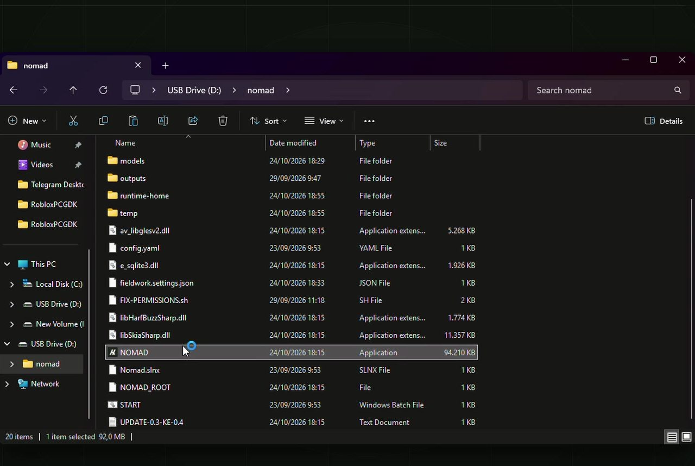

Events, online and offline
Planned and delivered end-to-end: promotion, participant management, winner selection and reward distribution. Hosted and co-hosted 50+ AMA sessions with IDO partners launching on the platform.
Marketing specialist turned full-stack & AI-automation engineer. Open to remote roles.
I started in Web3 marketing at Kommunitas, where I grew the Galxe community from 6,000 to 1.19 million followers, ran 200+ events and placed 36 press articles. Then I built the systems behind that work: the Komunitech course platform, the blog theme that now serves 400+ posts, the twice-daily publishing pipeline and the VPS it runs on. Right now I'm building NOMAD Pocket, an offline AI workspace that runs from a USB stick.
My first role at Kommunitas was marketing: community, events, partners, influencers and press for a Web3 launchpad. These are the numbers from that work, and they are the reason I later built the systems in the next section.
Galxe is the largest Web3 questing platform. I designed and ran the quest campaigns, the viral mechanics and the daily engagement that took Kommunitas from a small space to a reported Top 34 ranking. The data collection behind the campaign reports was the first thing I automated, which is where the engineering began.
Planned and delivered end-to-end: promotion, participant management, winner selection and reward distribution. Hosted and co-hosted 50+ AMA sessions with IDO partners launching on the platform.
Primary liaison for partners from onboarding through timelines, campaign execution and deliverable checks; vendor contracts negotiated and merchandise produced from design to delivery.
Influencer campaigns for 15+ partner projects on X and Telegram: vetting, briefing, negotiation, execution and performance reports.
Press releases, partnership announcements and SEO content distributed through Business Insider, AP News, Yahoo Finance, Kompas and Digital Journal. Keyword research and on-page work on every piece.
Komunitech is an Indonesian AI-education platform: courses, a 400-post blog and a daily newsletter for business owners and teams. The publishing, course and reporting work I used to do by hand is now software I designed, built and operate.
The front-end design and the source code: a public landing page, a member dashboard with a catalogue of AI models and learning paths, a course player for markdown, video, PDF and quiz lessons, and an admin panel with a curriculum builder for sections, lessons and quizzes, plus pricing, voucher, roles and payment modules.
How it runs. Vue 3 and TypeScript on Vite and Bun, with type-checked builds; authentication through Clerk; key routes prerendered for search engines; GitHub Actions deploys over SSH to the VPS and syncs the build into place. Courses can be assembled from a bundle format (classes, sections, lessons, quizzes) so a new class goes live without touching code.
A theme written from scratch to replace the page-builder layout: a seven-section homepage, a three-column article grid, article pages with an automatically generated table of contents, category pages and a four-column footer. Shipped as v1.0.4 and serving every post on the blog.
What it fixed. The table of contents used to overlap content on phones and lose its sticky position; both are solved. Minified-CSS caching that kept visitors on stale styles after a release is handled with versioned assets.
Twice a day the pipeline collects the last day of AI news, drafts an article to the Komunitech editorial SOP (answer-first opening, key takeaways, at least six sections, FAQ, references, internal links), places the focus keyword where Rank Math expects it, and publishes with metadata and a banner.
Quality gate. A Python audit script checks each draft for structure, forbidden phrasing, link rules and keyword placement before it can go out. When early articles scored in the low 20s on Rank Math, tightening keyword placement moved the same articles to 87 out of 100; the target is 80 or higher for every post.
HTML email templates filled from the day's content, with every image uploaded to a CDN (Bunny, through its API) so editions render fast in any mail client. The output is final, send-ready HTML for each daily edition, with nothing left to assemble by hand.
A Contabo VPS (4 vCPU, 7.8 GB RAM) hosting more than ten domains and services behind nginx, with Let's Encrypt certificates, DNS on Namecheap and Tailscale for private networking between machines.
Deploy discipline. Every service has a written runbook precise enough for an AI agent to follow, releases go through CI and rsync into versioned directories, and a change is only considered done once the live page has been checked.
AI agents given the SOPs, scripts and credentials they need to do recurring work without supervision: publishing articles, assembling course material into the platform's bundle format, and pushing imagery to the CDN. Each job is scheduled and ends by verifying its result on the live surface, so a silent failure cannot go unnoticed.
Reusable pieces. The editorial rules live in a skill package (instructions plus an audit script) that any agent can load, so writing quality does not depend on who, or what, is drafting.
A personal AI workspace that lives on a USB stick. Plug it into a 2015 laptop with the Wi-Fi off and it simply runs: chat, field notes, document drafting and exact data calculations, all local, with nothing installed on the host machine. Built for fieldwork in places where the internet is slow, expensive or absent.

Windows and Linux x64, CPU only, 4–8 GB RAM. Tested on an Intel i5-6200U laptop from 2015.
Single-file executable; HOME and TEMP redirected to the drive, so the host keeps almost nothing.
Bundled llama.cpp with a Qwen GGUF model; swappable to Ollama or any .gguf from the settings screen.
Eight-stage self-check (drive, engine, model, ports, workspace) before the first prompt.
SQLite FTS5 with Indonesian stop words, stemming and prefix match; every answer cites the excerpt it used.
Filter, sort, group-by, count and sum computed by the app with exact decimals; export to XLSX with real formulas.
No matching citation, no model call. Loopback-only engine on a random port. Encrypted columns, labelled honestly as “not a vault”.
C# on .NET 10 and Avalonia, about 4,600 lines across 53 files, 116 offline checks plus real-engine checks in CI.
NOMAD Pocket v0.4 full tour (4 min): from plugging in the drive to exporting a spreadsheet, recorded on the 2015 laptop with Wi-Fi off. Some sections sped up; chat speed is real.
Two years inside one fast-moving company, starting as a marketing specialist and moving into engineering as the work demanded it. The through-line: find the repetitive part, build the system, then run it.
Own the Komunitech engineering surface: the course platform, the blog theme, the SEO and newsletter pipelines, the agent workflows and the VPS they run on. Everything in the section above.
Monitored trading pairs across decentralised and centralised exchanges for price, volume, spread and anomalies, and built a multi-exchange tracking bot to flag discrepancies.
Indonesian, native. English, professional working proficiency.
Side projects and internal tools that came before the Komunitech work. Most of them are still running.
A full-stack quest platform for influencer campaigns: X (Twitter) OAuth verification, escrow-based reward distribution on Base, an admin dashboard and a KOL onboarding flow.
A Galxe custom-task backend that verifies player actions in a Base-chain game: reads contract events through RPC with failover, enforces minimum-bet and multiplier rules, and answers at a CORS-friendly endpoint Galxe evaluates.
Bots that run on the VPS around the clock, each with one job for the team.
@IUTheHR_bot attendance, auto clock-out, weekly reports, Google Classroom tasksactive@Alpha_Workplus_bot project tracking, meeting notes, task remindersactive@DeltaSeo1_bot keyword mapping, SERP analysis, on-page checksactive@zeta27_bot shell and script runner, cron, scraping, on-chain lookupsactive@betrax_ebot multi-exchange pair tracking and order-book checksretiredThe first Komunitech site: a landing page with course previews, slide decks and PDFs, served by a small Express app deployed on Railway before the full platform existed.
Thirty-six press releases and announcements placed through international and Indonesian outlets, plus the 400-post Komunitech blog that the pipeline now writes to. A selection:
A task is finished when the page, the post or the file is checked where users will actually see it. Every pipeline I run ends with that check, and so do I.
NOMAD calls its encryption “not a vault” because that is what it is. I would rather state a limit plainly than let a team discover it later.
I did the events, the PR and the publishing by hand first. That is why the systems that replaced the manual work fit how the team really operates.
I'm open to full-time roles, remote or in Jambi, where I can own a product surface end-to-end: build it, run it and make it grow. Reply time is usually the same day.